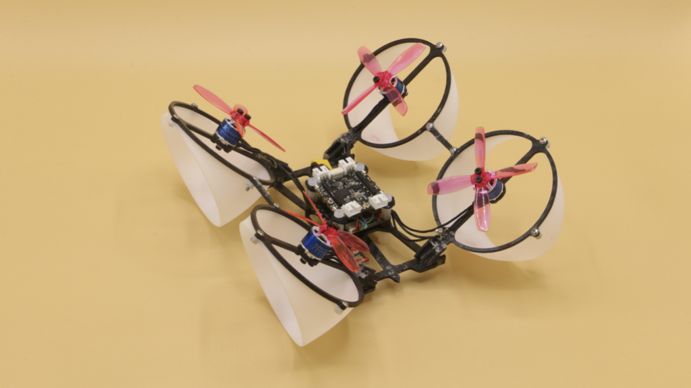

|
 |
Abstract: The letter proposes a passive wall following strategy for a multirotor robot based on the aerodynamic interaction between the propeller wake and the vertical surface. To reinforce the proximity effects, a vehicle with tilted and ducted propellers is introduced. Momentum theory is employed to elucidate the changes in horizontal and vertical components of the propelling thrust in the vicinity of a wall. The modeling and force measurements, when combined with the analysis of the flight dynamics, reveal the existence of a stable distance between the robot and a wall when only the attitude and altitude of the robot are controlled. Flight experiments were conducted to validate that the stable distance between the robot and the wall can be manipulated through the attitude setpoint or control gain, eliminating the need for position feedback. The outcomes enable a human operator to effortlessly fly the robot safely along a corridor without a collision in the absence of vision or other sensing instruments.
IEEE Robotics and Automation Letters, 7(2), 1581-1588, Presented at ICRA2022. Video-Youtube
|